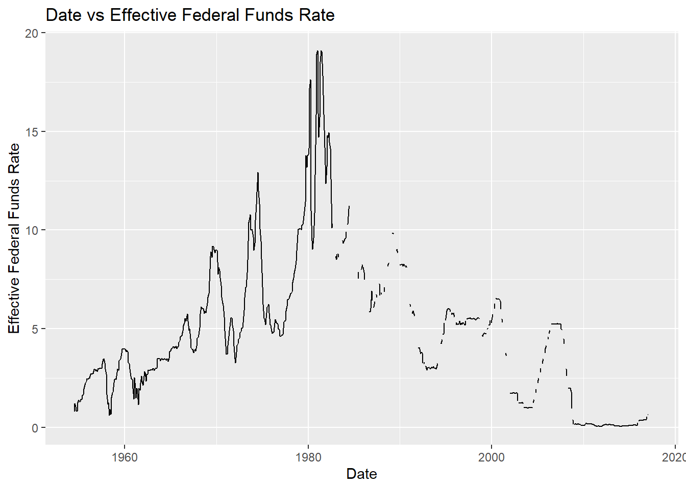
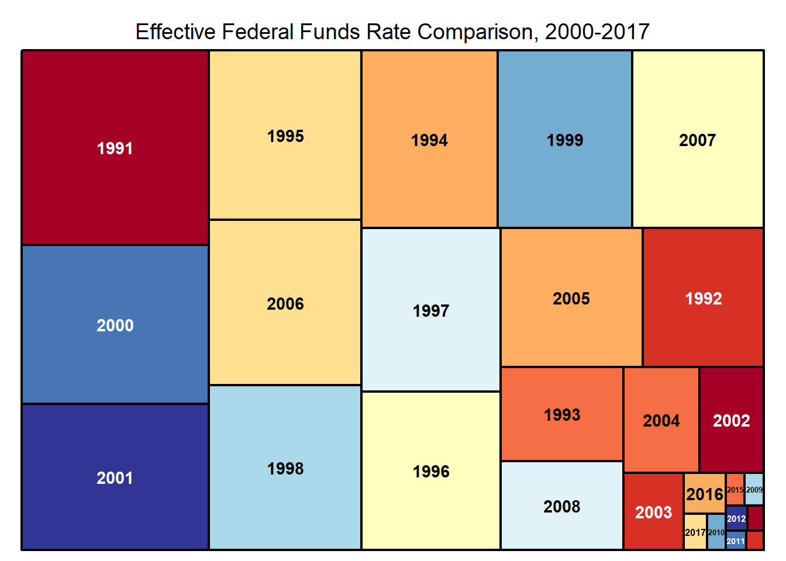

library(tidyverse)
library(ggplot2)
library(lubridate)
library(tidyr)
library(treemap)
knitr::opts_chunk$set(echo = TRUE, warning=FALSE, message=FALSE)Challenge 6 Instructions
challenge_6
hotel_bookings
air_bnb
fed_rate
debt
usa_households
abc_poll
Visualizing Time and Relationships
Challenge Overview
Today’s challenge is to:
- read in a data set, and describe the data set using both words and any supporting information (e.g., tables, etc)
- tidy data (as needed, including sanity checks)
- mutate variables as needed (including sanity checks)
- create at least one graph including time (evolution)
- try to make them “publication” ready (optional)
- Explain why you choose the specific graph type
- Create at least one graph depicting part-whole or flow relationships
- try to make them “publication” ready (optional)
- Explain why you choose the specific graph type
R Graph Gallery is a good starting point for thinking about what information is conveyed in standard graph types, and includes example R code.
(be sure to only include the category tags for the data you use!)
Read in data
Read in one (or more) of the following datasets, using the correct R package and command.
- debt ⭐
- fed_rate ⭐⭐
- abc_poll ⭐⭐⭐
- usa_hh ⭐⭐⭐
- hotel_bookings ⭐⭐⭐⭐
- AB_NYC ⭐⭐⭐⭐⭐
# Read data into a dataframe
data <- read_csv("_data/FedFundsRate.csv")
head(data)# A tibble: 6 × 10
Year Month Day Federal Fu…¹ Feder…² Feder…³ Effec…⁴ Real …⁵ Unemp…⁶ Infla…⁷
<dbl> <dbl> <dbl> <dbl> <dbl> <dbl> <dbl> <dbl> <dbl> <dbl>
1 1954 7 1 NA NA NA 0.8 4.6 5.8 NA
2 1954 8 1 NA NA NA 1.22 NA 6 NA
3 1954 9 1 NA NA NA 1.06 NA 6.1 NA
4 1954 10 1 NA NA NA 0.85 8 5.7 NA
5 1954 11 1 NA NA NA 0.83 NA 5.3 NA
6 1954 12 1 NA NA NA 1.28 NA 5 NA
# … with abbreviated variable names ¹`Federal Funds Target Rate`,
# ²`Federal Funds Upper Target`, ³`Federal Funds Lower Target`,
# ⁴`Effective Federal Funds Rate`, ⁵`Real GDP (Percent Change)`,
# ⁶`Unemployment Rate`, ⁷`Inflation Rate`min(data$Year)[1] 1954max(data$Year)[1] 2017Briefly describe the data
The data contains the different federal fund rates starting from 1954-2017. It also contains other growth informants such as GDP percent change, unemployment rate, etc. Each case in this data can be uniquely identified by the Year, Month, Day combination, which I have used to create a new “Date” column.
Tidy Data (as needed)
Is your data already tidy, or is there work to be done? Be sure to anticipate your end result to provide a sanity check, and document your work here.
# Transform the Year, Month, Day columns into a single Date column
data$Date <- as.Date(with(data,paste(Year,Month,Day,sep="-")),"%Y-%m-%d")
data# A tibble: 904 × 11
Year Month Day Federal F…¹ Feder…² Feder…³ Effec…⁴ Real …⁵ Unemp…⁶ Infla…⁷
<dbl> <dbl> <dbl> <dbl> <dbl> <dbl> <dbl> <dbl> <dbl> <dbl>
1 1954 7 1 NA NA NA 0.8 4.6 5.8 NA
2 1954 8 1 NA NA NA 1.22 NA 6 NA
3 1954 9 1 NA NA NA 1.06 NA 6.1 NA
4 1954 10 1 NA NA NA 0.85 8 5.7 NA
5 1954 11 1 NA NA NA 0.83 NA 5.3 NA
6 1954 12 1 NA NA NA 1.28 NA 5 NA
7 1955 1 1 NA NA NA 1.39 11.9 4.9 NA
8 1955 2 1 NA NA NA 1.29 NA 4.7 NA
9 1955 3 1 NA NA NA 1.35 NA 4.6 NA
10 1955 4 1 NA NA NA 1.43 6.7 4.7 NA
# … with 894 more rows, 1 more variable: Date <date>, and abbreviated variable
# names ¹`Federal Funds Target Rate`, ²`Federal Funds Upper Target`,
# ³`Federal Funds Lower Target`, ⁴`Effective Federal Funds Rate`,
# ⁵`Real GDP (Percent Change)`, ⁶`Unemployment Rate`, ⁷`Inflation Rate`Are there any variables that require mutation to be usable in your analysis stream? For example, do you need to calculate new values in order to graph them? Can string values be represented numerically? Do you need to turn any variables into factors and reorder for ease of graphics and visualization?
Document your work here.
Time Dependent Visualization
# Select the columns for whom time-dependent visualization will be constructed
select(data, c('Date','Effective Federal Funds Rate'))# A tibble: 904 × 2
Date `Effective Federal Funds Rate`
<date> <dbl>
1 1954-07-01 0.8
2 1954-08-01 1.22
3 1954-09-01 1.06
4 1954-10-01 0.85
5 1954-11-01 0.83
6 1954-12-01 1.28
7 1955-01-01 1.39
8 1955-02-01 1.29
9 1955-03-01 1.35
10 1955-04-01 1.43
# … with 894 more rows# Time series plot
ggplot(data, aes(x=Date, y=data$`Effective Federal Funds Rate`)) +
geom_line() +
xlab("Date") +
ylab("Effective Federal Funds Rate") +
ggtitle("Date vs Effective Federal Funds Rate")
From the above plot, we can see that some of the days are missing the federal fund rate values. We will now apply a forward fill mechanism to fill these values and get a continuous visualization.
# Since intermittent values are NA, we extrapolate these values basis the previous value in the dataframe.
data_filled <- data %>% fill(`Effective Federal Funds Rate`, .direction = 'updown')
ggplot(data_filled, aes(x=Date, y=data_filled$`Effective Federal Funds Rate`)) +
geom_line() +
xlab("Date") +
ylab("Effective Federal Funds Rate") +
ggtitle("Date vs Effective Federal Funds Rate")
Visualizing Part-Whole Relationships
For part-whole relationship, I decided to explore the Effective Federal Fund Rate column to get an idea of when this rate was high (specific year). The graph looked exteremly cluttered when I plotted for all years available, so I decided to explore only for years over 1990 using a treemap visualization.
data_filtered <- data_filled[data_filled$Year>1990,]
head(data_filtered)# A tibble: 6 × 11
Year Month Day Federal Fu…¹ Feder…² Feder…³ Effec…⁴ Real …⁵ Unemp…⁶ Infla…⁷
<dbl> <dbl> <dbl> <dbl> <dbl> <dbl> <dbl> <dbl> <dbl> <dbl>
1 1991 1 1 7 NA NA 6.91 -1.9 6.4 5.6
2 1991 1 9 6.75 NA NA 6.25 NA NA NA
3 1991 2 1 6.25 NA NA 6.25 NA 6.6 5.6
4 1991 3 1 6.25 NA NA 6.12 NA 6.8 5.2
5 1991 3 8 6 NA NA 5.91 NA NA NA
6 1991 4 1 6 NA NA 5.91 3.1 6.7 5.1
# … with 1 more variable: Date <date>, and abbreviated variable names
# ¹`Federal Funds Target Rate`, ²`Federal Funds Upper Target`,
# ³`Federal Funds Lower Target`, ⁴`Effective Federal Funds Rate`,
# ⁵`Real GDP (Percent Change)`, ⁶`Unemployment Rate`, ⁷`Inflation Rate`data_filtered %>%
treemap(index=c("Year"), vSize="Effective Federal Funds Rate", title="Effective Federal Funds Rate Comparison, 2000-2017", palette="RdYlBu")